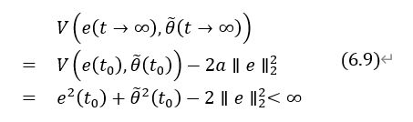
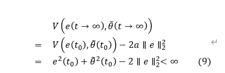
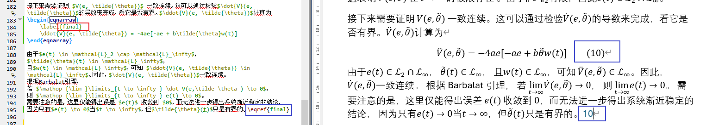

Pandoc系列 - 2. tex->docx 常见问题与解决方案
在处理 tex 文件转换为 docx 文件时，可能会遇到一些问题。
下面是对于一些情况的讨论以及解决方案。
1. 文献引用
【问题描述】tex 文件使用 bibtex
格式引用文献： 1
2\bibliographystyle{plain} % 参考文献格式
\bibliography{bibfile} % bib文件名tex →
docx 转换： 1
pandoc -s output.docx -o input.tex
【解决方案】进行 tex → docx
转换时添加以下指令： 1
pandoc -s template.tex --citeproc --bibliography=template.bib -o template.docx
说明：
--citeproc：让 Pandoc 内置的 “citation processor” 工作：- 识别文中的引用（比如 [@Smith2020] 这种 pandoc-style 引用）
- 按照引用样式把它们排版成真正的引文格式
- 自动生成文末参考文献列表（bibliography）
--bibliography=template.bib：指定参考文献数据库文件。- citeproc 会从这个 .bib 里按键值（key）查文献条目。
- 文献格式和引用格式还有问题，还需进一步调整
2. 字体问题
【问题描述】LaTex 公式中的正体 ${\rm d}$
无法处理，Pandoc 会报错
【解决方案】${\rm d}$ → $\mathrm{d}x$
3. 编号问题
3.1 没有编号
等章节编号，在word中不显示 - eqnarray公式没有自动编号
【解决方案】
conda创建python环境1
conda create -n pandoc_py310 python=3.10激活环境
接下来的操作都在1
conda activate pandoc_py310pandoc_py310环境下进行。pip安装pandoc-tex-numbering插件1
pip install pandoc-tex-numbering进行
tex→docx转换时使用以下指令：1
pandoc template.tex --citeproc --bibliography=template.bib -F pandoc-tex-numbering -o tempalte.docx
说明：
- 只改命令行参数是解决不了“自动编号”的问题的
- 必须加一个专门的 pandoc 过滤器，在 LaTeX→Word 的转换过程中，把 eqnarray 等环境里的编号“补”出来。
pandoc-tex-numbering：这个过滤器就是处理从 LaTeX 转成 docx 时【自动编号】的问题。--filter/-F(二者等价)：调用外部可执行程序作为过滤器（这里是pandoc-tex-numbering，所以可以推测：pip安装pandoc-tex-numbering插件后，提供了一个可执行程序）
3.3 eqnarray 环境慎用
【问题描述】Pandoc 进行 tex →
docx 转换时，直接使用eqnarray
环境会出问题，需要替换或者额外处理！
主要有两个问题：
- Pandoc 会将
eqnarray环境中的公式整块处理，不能实现在最后一行添加自动编号 eqnarray环境中的\nonumber指令在Pandoc中失效，具体见下图
根本原因：
pandoc-tex-numbering只在multiline-environments环境，才会识别\nonumber。multiline-environments环境包括- cases
- align
- aligned
- gather
- gathered
- multline
- flalign
multiline-environments环境不包括eqnarray环境。
【解决方案1】 Latex中 eqnarray 环境都替换为
align 环境，这样 \nonumber
指令才可以正常工作
【解决方案2】☆推荐这种方案 把 eqnarray 环境加入
multiline-environments，具体操作有两种途径（以下方案二选一即可）
直接命令行添加
-M1
2
3
4
5pandoc template.tex \
--citeproc --bibliography=template.bib \
-F pandoc-tex-numbering \
-M multiline-environments="cases,align,aligned,gather,gathered,multline,flalign,eqnarray" \
-o template.docx用 meta.yaml：
tex文件同目录新建一个meta.yaml：然后执行以下指令进行转换：1
multiline-environments: "cases,align,aligned,gather,gathered,multline,flalign,eqnarray"1
2
3
4
5pandoc template.tex \
--citeproc --bibliography=template.bib \
-F pandoc-tex-numbering \
--metadata-file=meta.yaml \
-o template.docx
配置好以后，
eqnarray就会像align一样按行处理，这一行末尾有\nonumber就不会编号。如果想整个
eqnarray都不要编号，那就给每一行都加上\nonumber（包括最后一行）。如果只想让中间几步不编号，就只在这些行后面写
\nonumber进行上述操作后，
eqnarray环境中\nonumber指令就可以正常工作了，见下图。
3.4 $$...$$ 和
\[...\] 这些环境也会编号
- Pandoc 就是会为
$$...$$和\[...\]这些环境中的公式添加编号。 - Pandoc 没有办法彻底取消
$$...$$和\[...\]这些环境中的编号
【解决方案】
Latex中
$$...$$和\[...\]环境都替换为align环境（或者eqnarray环境，但是需要进行 3.3 节中的【解决方案2】操作）然后添加
\nonumber指令，即可取消编号。
3.5
Pandoc 进行 tex → docx
转换时，支持用户自定义指令，前提是用户自定义指令需要合法！
下面这种自定义指令是可以的 1
\newcommand{\rmd}{{\mathrm{d}}}\rm而不是因为自定义）
1
\newcommand{\rmd}{{\rm{d}}}
3.6 公式编号含有章节编号
【问题描述】pandoc-tex-numbering
可以为章节和公式添加编号，但是公式编号包含章节编号，但是我们希望全文公式统一编号，不附带章节信息
上述问题具体见下图 
【解决方案】
pandoc-tex-numbering里有个总的参数number-reset-level，意思是在哪一级 section 时把计数器归零：默认
number-reset-level: 1：在每个一级标题（section/chapter）处重置，所以会得到 (6.1)、(6.2) 这种风格；如果想“永远不重置”，可以设成
0或一个非常大的数。具体操作：新建一个 meta.yaml，内容如下
然后命令行：1
2
3
4number-reset-level: 0 # 不随 section 重置
equation-src-format: "\\qquad({this_num})"
equation-ref-format: "{this_num}"
equation-cref-format: "({this_num})"1
2
3
4
5pandoc template.tex \
--citeproc --bibliography=template.bib \
-F pandoc-tex-numbering \
--metadata-file=meta.yaml \
-o template.docx
上述方案效果如下 
3.7 公式引用问题
【问题描述】eqnarray 环境中添加 \label
后，其他位置引用公式时用 \eqref
指令，虽然引用标号可以正确显示，但是引用不会自动添加括号
上述问题具体见下图 =
原因分析：这是 pandoc-tex-numbering 的“特性”：
过滤器里不能区分
\ref和\eqref，二者都当成\ref来处理；这个
\ref格式的默认值是 “{num}”，所以只会输出数字 10，不会自动加括号——跟 LaTeX 里的 行为不一样。 GitHub要想在 Word 里也得到 (10) 这种效果，需要告诉过滤器：
- “对 equation 的引用(ref)格式，用 ({num})。”